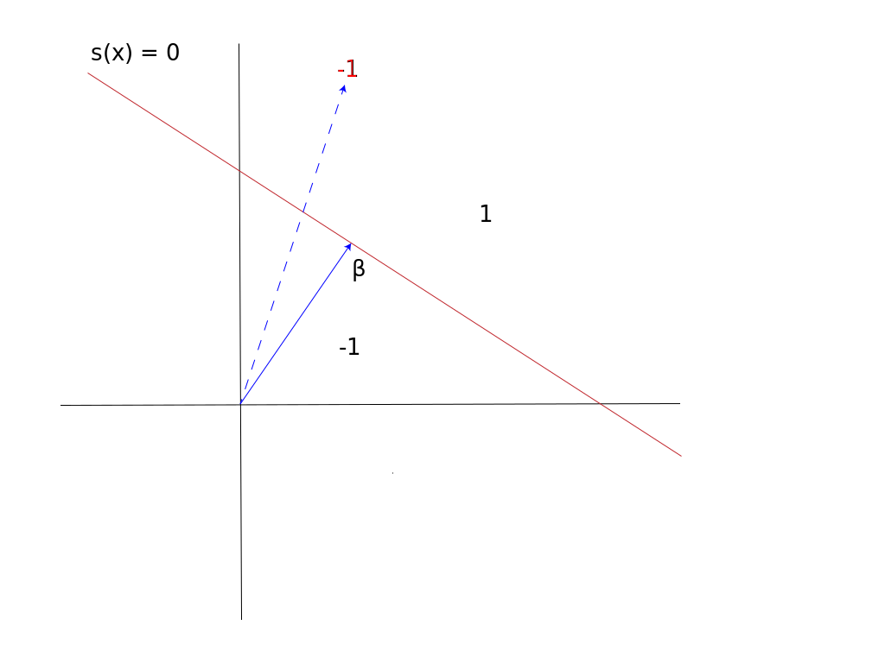
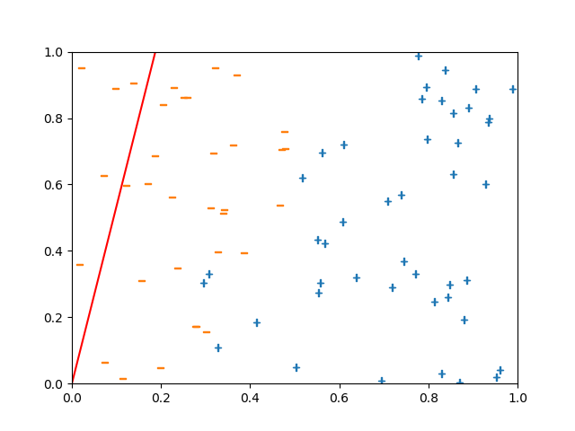
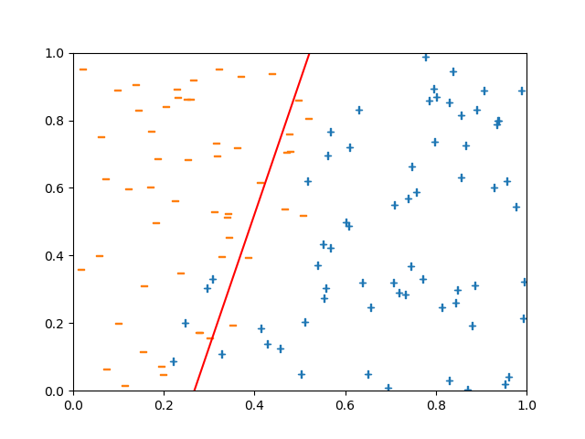
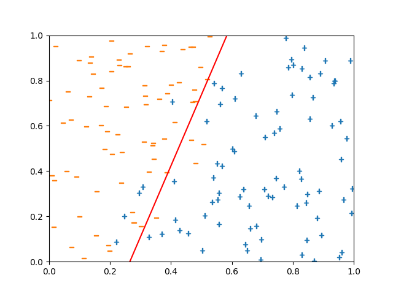
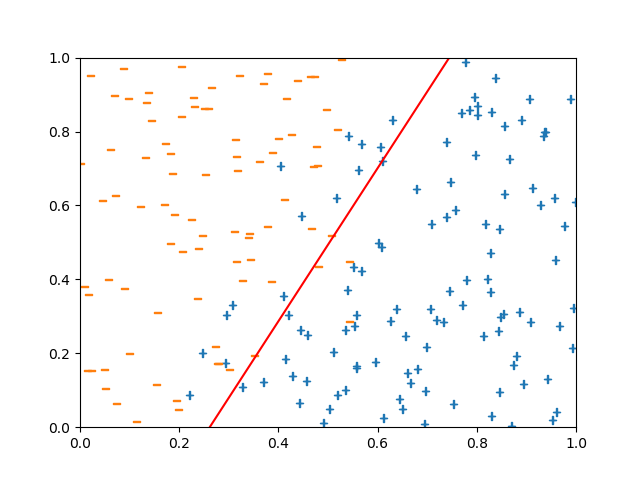

Statistical Learning Machines¶
In this chapter, we will see the following:
- Review of ordinary least squares
- Prediction, training, and testing
- Numpy, classes, random sampling, and regression in Python
- Supervised learning, online learning with the perceptron
The Prediction Perspective¶
Let’s return to the wine dataset that we began to discuss in the last chapter.
Recall that the wine dataset had 12 variables about different wine vintages, and the last column was the quality of the wine.
We will use numpy, Python’s linear algebra package, to store and manipulate the dataset.
Numpy is build around the numpy.array type, and we will introduce the array and other numpy methods more fully later in this chapter.
First, we have to import numpy, and we use the convention that we use the np prefix for numpy.
## Numpy is loaded with namespace prefix np
## To access anything in numpy you need to prepend it with np
import numpy as np
data_folder = '../data/'
Load the dataset, as we did in the previous chapter.
with open(data_folder + 'winequality-red.csv','r') as winefile:
header = winefile.readline()
wine_list = [line.strip().split(';') for line in winefile]
As we can see the wine_list is a list of lists with each value of the nested lists being a string.
print(wine_list[0])
produces the output,
['7.4', '0.7', '0', '1.9', '0.076', '11', '34', '0.9978', '3.51', '0.56', '9.4', '5']
Let’s load in the dataset into a numpy array object.
The simplest way to initialize an array is by passing it a list (or a list of lists).
We will also simultaneously convert the strings into floats using the dtype argument.
wine_ar = np.array(wine_list,dtype=np.float64)
We can display a summary of the array and the shape of the array with the following:
print(wine_ar)
wine_ar.shape
[[ 7.4 0.7 0. ... 0.56 9.4 5. ]
[ 7.8 0.88 0. ... 0.68 9.8 5. ]
[ 7.8 0.76 0.04 ... 0.65 9.8 5. ]
...
[ 6.3 0.51 0.13 ... 0.75 11. 6. ]
[ 5.9 0.645 0.12 ... 0.71 10.2 5. ]
[ 6. 0.31 0.47 ... 0.66 11. 6. ]]
The right-most column is the wine quality and it seems to be a positive integer. We can see that the list of lists now is a 2-dimensional array, with shape,
(1599, 12)
The shape is the number of rows by the number of columns.
shape is an attribute of the array type.
So we have that the wine dataset has 1599 records with 12 rows, and we want to predict the quality which is the
last column with the characteristics of the wine (first 11 columns).
We will apply ordinary least squares (OLS) regression on the wine dataset, which means that we need to isolate the X and Y variables. You should recall from linear regression, that ordinary least squares seeks to predict the Y variable as a linear function of the X variables (all 11 variables). Let us subselect the last column and all but the last using slicing.
#Subselect the predictor X and response y
y = wine_ar[:,-1]
X = wine_ar[:,:-1]
n,p = X.shape
When slicing a numpy array was can do the same thing as slicing for a list, except that we specify the slice for the rows and the columns.
In the above the slice wine_ar[:,:-1] specified to use all of the rows and all but the last column.
As a check,
y.shape, X.shape #just checking
outputs,
((1599,), (1599, 11))
Effects on wine quality with OLS¶
At the most basic level, OLS regression finds a linear function of the X variables, that minimizes the sum of squares of the residuals.
We will return to this in the next subsection, but for now, you should recall that inference for linear regression is based on the theory of normal random variables.
Specifically, if the residuals are normally distributed, then we can test if the coefficient associated with a variable is zero or not, corresponding to the null and alternative hypotheses respectively.
This is what the t-test accomplishes: that under normality, when a variable has no effect, the t-statistic has a t-distribution, and consequently we can obtain a P-value for this statistic.
To perform this type of analysis, we will use the statsmodels package.
This package has many of the common statistics and statistical tests that you should be familiar with from introductory statistics courses.
Let’s import the statsmodels api.
import statsmodels.api as sm
When using sm.OLS we will need to include our own intercept.
We can create a column of all 1 which is the intercept variable using the np.ones method.
This will create an n by 1 array which we can horizontally stack with X — horizontal stacking will concatenate arrays along the last dimension.
X = np.hstack((np.ones((n,1)),X)) #add intercept
Then we can fit the OLS with the following:
wine_ols = sm.OLS(y,X) #Initialize the OLS
wine_res = wine_ols.fit()
and print the summary.
print(wine_res.summary())
OLS Regression Results
==============================================================================
Dep. Variable: y R-squared: 0.361
Model: OLS Adj. R-squared: 0.356
Method: Least Squares F-statistic: 81.35
Date: Thu, 06 Sep 2018 Prob (F-statistic): 1.79e-145
Time: 11:24:16 Log-Likelihood: -1569.1
No. Observations: 1599 AIC: 3162.
Df Residuals: 1587 BIC: 3227.
Df Model: 11
Covariance Type: nonrobust
==============================================================================
coef std err t P>|t| [0.025 0.975]
------------------------------------------------------------------------------
const 21.9652 21.195 1.036 0.300 -19.607 63.538
x1 0.0250 0.026 0.963 0.336 -0.026 0.076
x2 -1.0836 0.121 -8.948 0.000 -1.321 -0.846
x3 -0.1826 0.147 -1.240 0.215 -0.471 0.106
x4 0.0163 0.015 1.089 0.276 -0.013 0.046
x5 -1.8742 0.419 -4.470 0.000 -2.697 -1.052
x6 0.0044 0.002 2.009 0.045 0.000 0.009
x7 -0.0033 0.001 -4.480 0.000 -0.005 -0.002
x8 -17.8812 21.633 -0.827 0.409 -60.314 24.551
x9 -0.4137 0.192 -2.159 0.031 -0.789 -0.038
x10 0.9163 0.114 8.014 0.000 0.692 1.141
x11 0.2762 0.026 10.429 0.000 0.224 0.328
==============================================================================
Omnibus: 27.376 Durbin-Watson: 1.757
Prob(Omnibus): 0.000 Jarque-Bera (JB): 40.965
Skew: -0.168 Prob(JB): 1.27e-09
Kurtosis: 3.708 Cond. No. 1.13e+05
==============================================================================
Warnings:
[1] Standard Errors assume that the covariance matrix of the errors is correctly specified.
[2] The condition number is large, 1.13e+05. This might indicate that there are
strong multicollinearity or other numerical problems.
This tabular output should be familiar to you.
You can see the result of the tests of each individual effect under the P>|t| column.
The overall goodness of fit can be assessed from the R-squared value and the F-statistic.
The R-squared statistic is pretty poor (it is closer to 0 than 1), which means that the addition of these covariates is not reducing the residual variance by much.
Furthermore, there is strong colinearity, which means that some of these predictor variables can be nearly written as a linear combination of the others.
This type of analysis is called statistical inference and it is used to answer some challenging questions, such as “Does the residual sugar have a significant effect on the wine quality?” Another perspective is prediction which answers the simpler question “Can we accurately predict the quality of the wine from these variables?” This is a simpler problem because it does not have to explicitely deal with issue of confounding, identifiability, or distributional assumptions. In the regression analysis, the interpretation of the P-values relies on the residuals being normally distributed. As we will see, we can get a good sense of the quality of the OLS prediction without this distributional assumption.
Prediction, loss, and testing¶
We can think of prediction as a game with two players. You are player 1, the predictor, and you have a strategy for predicting Y given X. In the linear regression example, this is given by the coefficient vector \(\hat \beta = (\hat \beta_0,\ldots,\hat \beta_p)\) (in our example above \(\hat \beta_0\) is the intercept and \(p=11\)) which you have trained from \(n_0\) data. Then player 2, which is usually thought of as nature, provides you with a new instance of X variables:
You then make a prediction, which for linear regression is
As player 1, \(\hat y\) is your move, and then player 2 counters with the actual Y variable value, \(y\). You then confer a loss based on an agreed upon loss function, for example the squared error,
We can also imagine modifying the above example so that player 2 presents you with many data and you suffer the average of the losses.
How well did you do? That will depend on the quality of your prediction, and on the specific instance of X,Y variables that player 2 provided. In statistical learning theory, we think of the X,Y variables as random and coming from some unknown joint distribution. We would like to minimize the expected loss, which is known as the risk of the predictor. Any predictor, including \(\hat y\) for the OLS coefficients \(\hat \beta\), has a risk and we compare two predictors by their risks. How can we estimate the risk of the OLS predictor?
The answer is to simulate the prediction process. In this simulation we draw a random training dataset which we used to estimate the OLS coefficients. Then we simulate a different random testing dataset, and we see the accumulated losses. We can accomplish this by randomly shuffling the dataset and then letting the first \(n_0\) samples be the training set and let the remainder be the test set. Train the predictor with the training set and calculate the losses over the test set, and average the losses to get the test error.
Because the training and testing datasets are different random samples then they are independent and the average testing loss is an unbiased estimate of the risk of the predictor. Let \(\hat y_i\) be the prediction of the ith sample using OLS on the training set only. Moreover, by the law of large numbers,
as \(n \rightarrow \infty\) where this convergence is in probability. The above limit works when we keep the training set fixed and so in the right hand side of the equation we condition on the OLS coefficients. The idea is that if we sample a large enough test set then we can approximate the risk of the predictor. The initial shuffle was important because otherwise we would not know that the training and testing sets were draws from the same population. For example, it could very well have been that the wine dataset was ordered by vintage year, then the training set would have been older vintages than the test set.
We can randomly shuffle the rows of the array using the shuffle method in the numpy.random module.
Then we make the training-test split by slicing.
np.random.shuffle(wine_ar) #start by randomly shuffling data
wine_ar = np.hstack((np.ones((n,1)),wine_ar)) #add intercept
train_size = n // 2 #set training set size 50-50 split
wine_tr, wine_te = wine_ar[:train_size], wine_ar[train_size:] # training and test split
In the above code, I make the size of the training set half of the full dataset. Run OLS and extract the coefficients,
# fit data and get the estimated beta
train_ols = sm.OLS(wine_tr[:,-1],wine_tr[:,:-1])
train_res = train_ols.fit()
beta_hat = train_res.params
You can see what attributes are attached to train_res with tab completion in ipython or you can see the documentation here .
Now beta_hat is a vector of length train_size, and we need to get \(\hat y\) for the test set.
To accomplish this we use the matrix multiplication,
if \(X\) is the test set matrix.
In Python 3, matrix multiply is accomplished with the @ operator.
y_te, X_te = wine_te[:,-1], wine_te[:,:-1]
y_hat = X_te @ beta_hat
losses = (y_te - y_hat)**2. #extract sq error losses
te_error = np.mean(losses) #average losses
The losses above are the element-wise subtraction of the test Y variables and the predicted Y variables, then the element-wise square.
We used numpy.mean to average the losses.
Let’s look at the test error:
print(te_error, te_error**0.5) #test error and its sqrt
returns
0.41531101266937576 0.6444462837734234
Is this good? We can compare this to the constant predictor, where for each test datum you predict with the mean of the training Y values.
y_const = wine_tr[:,-1].mean() #what if we predict with a single value?
np.mean((y_te - y_const)**2.) #test error - do you see the array broadcasting?
Here we used the array.mean() method to average the elements of the array.
This does the same as numpy.mean() except it is a class method.
The result is the test error,
0.6640473287949108
The test error for the OLS regression is 0.415 but we should compare this to the test error for the constant predictor which is 0.664. This is consistent with the small R-squared in the above analysis. Out of curiosity, let’s look at the actual predictions,
print(y_hat[0:10]) #predictions
print(y_te[0:10]) #actual values
with output,
[5.28516483 5.20432846 5.37849799 6.44910839 6.03562429 6.149762
5.12044022 5.85733763 6.0109202 6.1063934 ]
[5. 4. 5. 7. 6. 6. 6. 5. 6. 6.]
The actual values are integers.
Suppose that you are working with a winery to help develop an excellent vintage.
As a vintner, your customer might not know what to make of a prediction of 5.85733763, and would prefer a predicted score.
To this end, we can round our OLS predictions,
y_round = np.round(y_hat) #what if we needed to predict an integer? round!
ro_error = np.mean((y_te - y_round)**2.)
print(ro_error, ro_error**0.5)
The resulting test error and the square root is
0.50625 0.7115124735378854
The square error loss is worse if we round the prediction to the nearest integer, which shouldn’t be too surprising. We lose flexibility to minimize the square error loss if we are restricted to integers. But now we can ask, “What is the proportion of vintages for which we get the score exactly right (or equivalently, the proportion wrong)?”
np.mean(y_round != y_te)
What we did here is perform an element-wise Boolean operation y_round != y_te which produced a Boolean vector.
When we calculate the mean of this, it will cast it as integers, 0,1 for False,True respectively, then average these integers.
The result is,
0.41625
What we have done here is modify our loss function during the testing phase. Instead of the square error loss it is now the 0-1 loss,
The average 0-1 loss is the mis-classification rate and it is 41.6%.
These ideas suggest a more general form of statistical learning, called supervised learning.
Before we get to that, let’s take a closer look at Numpy.
Numpy and Vectorization¶
Numpy is built around the array type. The array differs from lists because all of the elements need to have the same type, such as integers or floats. But why introduce the array type at all as opposed to storing your data in nested lists since it is more restrictive? Firstly, the array is allows for more sophisticated slicing and indexing. Secondly, and more importantly, the array has fast optimized linear algebra methods.
To begin using arrays, we need to create them. There are several ways to
initialize arrays in numpy. We have seen the use of np.array with a
list as the first parameter to convert lists into arrays. The following
functions create special matrices such as the all ones array, all zeros,
and the identity matrix. For example, let’s recall that we can
initialize an all ones vector with np.ones(d) where d is the
length of the vector or size of the array that you want to construct.
## Special matrices
onesmat = np.ones((4,4))
zerosmat = np.zeros((4,4))
ident = np.eye(4)
print(onesmat)
print(zerosmat)
print(ident)
[[1. 1. 1. 1.]
[1. 1. 1. 1.]
[1. 1. 1. 1.]
[1. 1. 1. 1.]]
[[0. 0. 0. 0.]
[0. 0. 0. 0.]
[0. 0. 0. 0.]
[0. 0. 0. 0.]]
[[1. 0. 0. 0.]
[0. 1. 0. 0.]
[0. 0. 1. 0.]
[0. 0. 0. 1.]]
Just like range iterates through integers, the np.arange
function will create a vector that counts up to the integer.
ran = np.arange(20)
print(ran)
[ 0 1 2 3 4 5 6 7 8 9 10 11 12 13 14 15 16 17 18 19]
We can also use loadtxt to load a delimited file of numbers. Mostly,
we will use Pandas for reading data, but for now let’s load the
following dataset into a numpy array. This dataset can be found at
https://archive.ics.uci.edu/ml/datasets/seeds
import numpy as np
data_folder = '../data/'
seeds = np.loadtxt(data_folder + 'seeds_dataset.txt',dtype=np.float64)
This dataset contains the following variables describing wheat seed kernels. Column meanings for the seeds dataset:
- area A,
- perimeter P,
- compactness \(C = 4 \pi A / P^2\),
- length of kernel,
- width of kernel,
- asymmetry coefficient
- length of kernel groove.
The last column corresponds to the wheat variety.
The following are attributes for arrays, try tab completion in ipython to see
available methods. One important concept is the data type of the object,
called the dtype. We have already seen the use of the dtype argument
when we initialized the array in
wine_ar = np.array(wine_list,dtype=np.float64). np.float64 is an
example of a Numpy dtype object, and it is used to specify the type of
the elements of the array.
n,p = seeds.shape #Remember tuple unpacking!
print("type:\t{}\nndim:\t{}\nshape:\t{}\nsize:\t{}\ndtype:\t{}".format(
type(seeds),seeds.ndim,seeds.shape,seeds.size,seeds.dtype))
type: <class 'numpy.ndarray'>
ndim: 2
shape: (210, 8)
size: 1680
dtype: float64
One example of the linear algebra tools in Numpy is the transpose which
swaps the roles of rows and columns in an array. For nested lists this
process would be nearly impossible. We can do this by the attribute
seeds.T.
print(seeds.T.shape)
print(seeds.T)
(8, 210)
[[15.26 14.88 14.29 ... 13.2 11.84 12.3 ]
[14.84 14.57 14.09 ... 13.66 13.21 13.34 ]
[ 0.871 0.8811 0.905 ... 0.8883 0.8521 0.8684]
...
[ 2.221 1.018 2.699 ... 8.315 3.598 5.637 ]
[ 5.22 4.956 4.825 ... 5.056 5.044 5.063 ]
[ 1. 1. 1. ... 3. 3. 3. ]]
Using the ones vector we can sum along the rows or the columns of the matrix. This is our first example of a matrix multiply in python, but you should become very proficient at using matrix operations to accomplish your goals.
rowsum = seeds.T @ np.ones(n) # sum the rows
colsum = seeds @ np.ones(p) # sum the columns
You can do this in a more succinct and efficient way using the
np.sum function, and specify the axis to sum along.
rowsum = seeds.sum(axis=0)
colsum = seeds.sum(axis=1)
The axis parameter is consistent with the position in the brackets
[] of the axis. So for example, axis=0 corresponds to the row as
in i in seeds[i,:]. Let’s think about a way to do this without
using Numpy matrix multiplication or the sum method.
def mult_ones(seeds):
output = [0.]*p
for row in seeds: #arrays are iterable and return the rows
for i in range(p):
output[i] += row[i]
return output
%time output = mult_ones(seeds)
CPU times: user 344 µs, sys: 8 µs, total: 352 µs
Wall time: 355 µs
%time output = seeds.T @ np.ones(n)
CPU times: user 46 µs, sys: 0 ns, total: 46 µs
Wall time: 49.1 µs
%time output = seeds.sum(axis=0)
CPU times: user 103 µs, sys: 2 µs, total: 105 µs
Wall time: 114 µs
It seems that the matrix multiply is in fact faster than the sum, and both are faster than the custom implementation. The idea that we can solve a repeated problem using a matrix multiply or vector operation is called vectorization.
Why should the operations above produce different run times? The answer
lies in the way that Python code is compiled. The basic idea is that the
just-in-time compilation of the Python code will not be as efficient or
stable as the C implementation that is precompiled and used in Numpy. So
even though in theory the matrix multiply should be the same as
mult_ones, in reality the precompilation makes a big difference. If
you are performing algebraic operations in for loops and especially
nested for loops, you should think about ways to turn it into matrix
operations, because that will likely be faster.
Matrix operations¶
Numpy has many common matrix operations that can be used to vectorize
basic scalar operations. For example we can divide all of the elements
by 10, etc.
## Some elementwise operations
decseeds = seeds/10.0
mulseeds = 15*seeds - 1.
Numpy has built in elementwise operations like log, dot,
sqrt.
## Elementwise functions
declog = np.log(decseeds)
decexp = np.exp(decseeds)
decrt = np.sqrt(decseeds)
We have already seen horizontally stacking arrays with np.hstack.
This is a bit of a misnomer though because in general this is
concatenation, and you can use the np.concatenate method. All of the
dimensions of the concatenated arrays must match except for the axis
parameter, which is the axis to concatenate along.
ratvec = seeds[:,4] / seeds[:,5]
ratvec = ratvec.reshape((n,1))
seeds_rat = np.concatenate((seeds,ratvec), axis=-1)
ratvec.shape, seeds.shape
((210, 1), (210, 8))
You can see that all but the last axis match above. So for example, you can concatenate along a different axis like so,
everyten = seeds[0:n:10,:]
seeds_ten = np.concatenate((seeds,everyten), axis=0)
Other matrix operations are the mean, min, max as in,
print("sum: {}\nmean: {}\nmin: {}\nmax: {}".format(
seeds.sum(), seeds.mean(), seeds.min(), seeds.max()))
sum: 10557.3759
mean: 6.284152321428571
min: 0.7651
max: 21.18
In the above we did not specify an axis so it produced the result applied to the whole array. We can produce the row or column-wise mean, as in,
print("sum: {}\nmean: {}\nmin: {}\nmax: {}".format(
seeds.sum(axis=0), seeds.mean(axis=0),
seeds.min(axis=0), seeds.max(axis=0)))
sum: [ 3117.98 3057.45 182.9097 1181.992 684.307 777.0422
1135.695 420. ]
mean: [ 14.84752381 14.55928571 0.87099857 5.62853333 3.25860476
3.70020095 5.40807143 2. ]
min: [ 10.59 12.41 0.8081 4.899 2.63 0.7651 4.519 1. ]
max: [ 21.18 17.25 0.9183 6.675 4.033 8.456 6.55 3. ]
There are other array operations that we will not go over, such as
cumsum. You can find this any many other useful methods and
operations in the Numpy reference:
https://docs.scipy.org/doc/numpy/reference/
Array Broadcasting¶
Suppose that we sum two arrays with the same shape. It should not be surprising that this produces an elementwise sum.
seeds_poly = seeds + seeds ** 2.
ssum = seeds.sum(axis=0)
ssum.shape
(8,)
The first instance of broadcasting happens when we compare an array and a vector (or just lower dimensional array). If the problem can be resolved just by reshaping the array by padding 1’s to the first axes, then it will do that to the vector. For example,
ssum - ssum.reshape((1,8))
array([[0., 0., 0., 0., 0., 0., 0., 0.]])
will broadcast the ssum array as a (1,8) shape array before
completing the subtraction operation.
The second form of broadcasting does not merely alter the shape of the array, but in fact replicates it. Consider the following array operation which in effect removes the column mean from each column, thus centering the variables.
seeds_center = seeds - seeds.mean(axis=0)
This is subtracting arrays of different shapes. The way that it worked is by effectively duplicating the vector 210 times and horizontally stacking these duplicates. It knew to do this because the arrays still matched in the second dimension. It will similarly broadcast an array that matches along the last dimension.
seeds_alt = seeds * np.array([0,1]*4)
Broadcasting overall works by trying the first method of padding the shape with 1s and then the second method of replicating the array. If neither work then the operation will throw and error. Broadcasting can provide for succinct ways to vectorize operations without having to reshape or create new arrays.
Matrix Slicing, Views, and Copies¶
Let’s begin by making a copy of the seeds matrix so that we do not
alter the contents of the original data.
seeds_copy = seeds.copy() #this will be explained later
print(seeds_copy[10:12,4:6])
[[3.242 4.543]
[3.201 1.717]]
We see above an example of slicing, and it works in the same way as list slicing except that it happens on both axes simultaneously. We copied the seeds matrix because for arrays assignment just copies the pointer to the elements. For example,
A = seeds_copy
A[1,1] = -11
print(seeds_copy[1,1])
-11.0
Fancy indexing refers to look-ups using lists or boolean vectors as arguments. You can do this in combination with slicing as in the following.
## Boolean and list indexing
myrows = [2,17,97]
print(seeds_copy[myrows,0:2])
[[14.29 14.09]
[15.69 14.75]
[18.98 16.57]]
If you index by a list in each axis then you will need to make sure the lists have the same length, because it will output a vector where each pair of indices are evaluated in sequence.
mycols = [1,2,3]
print(seeds_copy[myrows,mycols])
[14.09 0.9058 6.449 ]
For boolean vectors, if you pass a boolean vector of the same length as that axis then it will subselect the True elements in that axis.
rowslarge = seeds[:,0]>20.2
print(seeds[rowslarge,0:2])
[[20.71 17.23]
[21.18 17.21]
[20.88 17.05]
[20.97 17.25]
[20.24 16.91]]
We have seen that you can slice along either dimension in an array just like you would with a list. We can assign values to the slices like we do for lists as in the following.
A = seeds_copy[1:5,4:6]
seeds_copy[1:5,4:6] = 999
print(seeds_copy[1:5,4:6])
[[1998. 1998.]
[1998. 1998.]
[1998. 1998.]
[1998. 1998.]]
Assignment also works with fancy indexing. In the above display, we
assigned the variable A to the slice of the seeds_copy array and
then altered the entries of the sliced array. But what happened to
A?
A
array([[999., 999.],
[999., 999.],
[999., 999.],
[999., 999.]])
So we see that if you save a slice as another variable then that other variable reflects changes to the elements of the original array. Furthermore, if you save the slice as another variable then perform the same operation on that variable it can modify the original array in some instances. This is because slicing creates what is known as a view of the original array. A view should be thought of as a pointer to the elements of the original array. For example,
A[:,:] = A * 2.
print(seeds_copy[1:5,4:6])
[[1998. 1998.]
[1998. 1998.]
[1998. 1998.]
[1998. 1998.]]
Fancy indexing on the other hand produces copies instead of views so it
does not have this behavior. If you are assigning slices and want to
prevent this behavior then you will need to copy the array with the
copy method as we did at the beginning of this subsection.
Supervised Learning¶
At the beginning of this chapter, we saw that OLS regression can be thought of as a predictor that is designed to give small square error loss. This should not be surprising because OLS is the solution to the following minimization problem,
In words, OLS is the minimizer of the average square error loss of any linear predictor. The square error objective above can be written as
where \(\ell, \hat y\) are the previously defined square error loss and the OLS prediction respectively. We call this expression the training error and for a fixed \(\beta\) this is an unbiased estimate for the risk of the linear predictor with that coefficient vector. Hence, minimizing the training error is a reasonable idea, since it seems to be a decent proxy for the risk of the predictor. It turns out that OLS regression, when viewed as a predictor, is the result of two decisions:
- OLS gives a linear predictor, \(\hat y\),
- OLS minimizes the training error for square error loss.
We are now ready to propose a general framework for thinking about problems like linear regression, from the prediction perspective.
A supervised learner is any algorithm that takes p dimensional training data of the form
and fits a predictor, which is a function that predicts \(Y\) from a new datapoint, or a test point \(X = x\), which we denote \(\hat y(x)\). The corresponding random variables \(X,Y\) are called the predictor and response variables respectively, and we will assume that the X variables are p dimensional.
For example, we are a car insurance company and we want to predict how much a customer will cost our company in claims per year. Before a customer takes out a policy they fill out a form to obtain a quote for the cost of the policy (the premium). The quote form tells the company certain details about the customer, such as where they live, demographic information, and driver history. Nowadays, insurance companies also obtain the credit history of individuals which turns out the be a good predictor of insurance claims. Because this cost to a company is a continuous variable, this is an example of a regression problem, which is a class of supervised learning.
As another example, the U.S. military monitors ocean shipping lanes for illicit trading, armed vessels, etc. Using satellite images, which you can encode as an X vector, they want to classify the type of vessel, which can be encoded as integers 0,1,2, etc. Because the response variable \(Y\) is discrete in this case, we call this a classification problem, which is another class of supervised learning. In this example, U.S. contractors use sophisticated tools like convolutional neural networks to improve the military’s surveillance capabilities by building better classifiers.
Supervised learning refers to the particular learning task at hand, and all sorts of heuristics can be proposed to solve the problem. For example, suppose that we want to predict if two people will become friends in a social network. A heuristic would be, predict that they will be friends if they have more than 5 friends in common. On the other hand, OLS is what we call an empirical risk minimizer (ERM) which just means that it minimizes the term (ER), which is often called the empirical risk. We could have selected a different form for the predictor \(\hat y\) or for the loss function \(\ell\) and obtained a different ERM. In this sense, ERM is not heuristics, but rather a principled ways to come up with new predictors.
All of these supervised learners have been presented in what is known as batch form. Specifically, there is a single training and testing phase. An alternative to this is called online learning in which you observe a stream of X,Y data, and you have to predict each new example in sequence. For example, you are a website that serves free content, and you want to get people to donate to help you continue to produce that content. To do this you have a pop-up box that asks for a donation, and they have to decline or donate to move on to the content. Because this can be intrusive, you want to strategically ask for these donations, so you monitor someone’s session all the while extracting possible predictor variables. Then at a predetermined point, such as after scrolling through half of an article, you ask them for a donation if they seem likely to donate. This takes the form of the game theoretic interpretation discussed at the beginning of the chapter, but now it is sequential. Specifically, the website (player 1) and the user (player 2) do the following in sequence,
- Player 2 (the user) shows the predictor variables (the session behavior of the user) to player 1;
- Player 1 (the website) then predicts the response variable (whether they donate or not), and then acts accordingly;
- Player 2 (the user) reveals the response variable;
- Player 1 then incurs some reward/loss;
- Repeat 1-4 for the next session.
In this case, the loss is either the implicit loss of a user annoyed that you are asking them to donate, or the lost revenue from the missed possible donation. There are some interesting properties of this specific scenario, such as the specific choice of loss function, that make it a non-standard classification problem. Regardless, let’s consider the general problem of online classification, where we observe the predictor variable, then need to predict, then observe the response variable.
The Perceptron¶
The perceptron [ROS58] is a simple algorithm that works surprisingly well. It is designed to solve online classification algorithms, where the response variable is -1 or 1 (we can choose these two numbers without loss of generality), which is called binary classification. In this context, the predictor either mis-classifies the response or not and we will be making predictions in an online fashion. To begin, let’s talk about the geometry of linear classifiers.
A linear classifier is a binary classifier that takes the following form,
What this means is that the classifier only needs to evaluate the linear score function, denoted by \(\hat s(x) = \beta_0 + \beta^\top x\), in order to make the prediction. We can visualize prediction with a linear classifier by drawing the line \(\hat s(x) = 0\), which we will call the separator line.
The red line indicates the line along which \(s(x) = \beta_0 + \beta^\top x = 0\), above the line we are classifying the instance as \(\hat y_i = 1\), and below the line is \(\hat y_i = -1\). The black points are correctly classified and the red \(-1\) is mis-classified. In online learning, we see the data in sequence and if we correctly classify each or not. A reasonable reaction to a mis-classification is to modify the \(\beta\) to move the red separator line away from the mis-classified point. We do this by subtracting some of \(x_i\) from \(\beta\) if \(y_i = -1\) and adding if \(y_i = 1\). Specifically, if datum i is mis-classified, then we make the updates
Because we are continually updating \(\beta\) at each step we can evaluate the linear classifier, thus predicting the next response. We can use any online learner in the batch learning context by ignoring the intermediate predictions and just outputting the final predictor after all of the data has been seen. If each iteration takes a small amount of compute time to make the update, i.e. \(O(1)\) time, then this means that the final predictor will take \(O(n)\) time to compute. Sometimes, when we refer to online learning we just mean a learning machine that takes linear time by iterating through each datum in sequence. You can also use batch learning to make an online learner by simply re-training a batch learner with the previous \(i-1\) points at the ith time point. This would take much more compute time however (at least \(O(n^2)\) time), and this does not normally qualify as an online learner. We will implement the perceptron, but first let’s think about how to simulate data for which a linear classifier would be a good idea.
Simulation in Numpy¶
The random module in Numpy has many random number generators.
For sample random data we have random samples from the uniform (rand, uniform), normal distribution (randn, normal), binomial (binomial), and other common distributions.
There are also methods for sampling from or permuting a dataset: sample samples from a dataset with or without replacement, permutation returns a random permutation of the dataset, and shuffle shuffles the contents of a sequence.
To see the details of these methods look at this documentation on SciPy.org .
Let’s begin by creating an n by 2 random X array.
Most of the distributions in np.random can take array arguments and also the desired shape of the resulting array.
n = 200
X = np.random.uniform(0,1,(n,2))
beta = np.array([20,-10])
beta_zero = 4.
Y = sim_y(X,beta,beta_zero)
In the above each X variable was drawn from uniform(0,1) random variables, while \(\beta, \beta_0\) were chosen arbitrarily. We use the following function to simulate the Y variable.
def sim_y(X, beta, beta_zero):
"""Simulate y from X and beta"""
s = X @ beta + beta_zero
p = 1. / (1 + np.exp(-s))
Y = 2*np.random.binomial(1,p) - 1
return Y
We calculate the linear score, and then use the sigmoid function to turn this into a valid probability.
We then pass this n dimensional array to random.binomial which returns an n dimensional array itself.
Recall that we want the response to be +1 or -1 so we multiply by 2 and subtract by 1.
You might notice that this simulation is a draw from a logistic regression model.
Creating the Perceptron class¶
Most learning machines like the perceptron have internal states that we update and want to retain.
For this reason, we want to create a class for the perceptron that caches the current \(\beta, \beta_0\) and provides a simple interface for updating these parameters.
We have already seen the use of instance methods, for example, fileobject.readline() when fileobject is the result of the open``function.
This is an example of object oriented programming, where we organize our code around the object, such as a File object or the perceptron.
Below is the ``Perceptron class and how it is initialized, which is specified in the __init__ method.
class Perceptron:
"""
Rosenblatt's perceptron, online learner
Attributes:
eta: learning rate
beta: coefficient vector
p: dimension of X
beta_zero: intercept
"""
def __init__(self,eta,dim,
beta_init=None,beta_zero_init=None):
"""initialize and set beta"""
self.eta = eta
self.p = dim
if beta_init:
self.beta = beta_init
else:
self.beta = np.zeros(dim)
if beta_zero_init:
self.beta_zero = beta_zero_init
else:
self.beta_zero = 0.
...
All instance methods need to start with the self argument.
Now that we have written this class, we can make an instance of the perceptron.
perc = Perceptron(.1,2)
This implicitely calls __init__ so it will create the attributes eta, p, beta, beta_zero.
We choose eta = .1 in this case somewhat arbitrarily.
We need a way to update the perceptron, and use it to predict a new Y variable.
class Perceptron:
...
def predict(self,x):
"""predict y with x"""
s = x @ self.beta + self.beta_zero
yhat = 2*(s > 0) - 1
return yhat
def update_beta(self,x,y):
"""single step update output 0/1 loss"""
yhat = self.predict(x)
if yhat != y:
self.beta += self.eta * y * x
self.beta_zero += self.eta * y
return yhat != y
These methods are what we use to update the coefficients, which we do on a mis-classification. Try to parse what is happening above, it is a straightforward application of our description of the perceptron. We can finally iterate through the dataset, feeding it to the perceptron, and storing the losses:
loss = []
t_iter = 40
# Iterate through the data, updating perceptron for t,(x,y) in enumerate(zip(X,Y)):
loss.append(perc.update_beta(x,y))
Notice the use of zip, which is an iterator tool that will zip up two iterables and yield a pair of each in sequence (I need to use t for plotting so I combine this with enumerate).
We can see the result of these updates after t=40,80,120,160,200 iterations below (+ are the response of +1 and - are -1).
The state of the perceptron with current separator line in red after 40 samples
The state of the perceptron with current separator line in red after 80 samples
The state of the perceptron with current separator line in red after 120 samples
The state of the perceptron with current separator line in red after 160 samples
The state of the perceptron with current separator line in red after 200 samples
As we can see the perceptron hones in on a reasonable separator line. This behavior, that the perceptron tends to converge on a good solution, was by no means obvious. It turns out that the perceptron is a special case of an online learning technique called stochastic gradient descent. We will not return to stochastic gradient descent until Unit 3. The following is the full source code for the module. Notice that the main instructions begin with the line
if __name__=='__main__':
which means that the following block will be executed if you call the script with $ python perceptron.py or in ipython with %run pperceptron.py.
Alternatively, you could import the module with import perceptron and have access to the Perceptron class with perceptron.Perceptron and the main code block will not be run.
This is the preferred way to write modules.
import numpy as np
import matplotlib
matplotlib.use('Agg')
from matplotlib import pyplot as plt
def sim_y(X, beta, beta_zero):
"""Simulate y from X and beta"""
s = X @ beta + beta_zero
p = 1. / (1 + np.exp(-s))
Y = 2*np.random.binomial(1,p) - 1
return Y
def plot_data(X,Y,beta,beta_zero,filename=None):
"""Plot the 2-dim data with separator line"""
plt.scatter(X[Y==1,0], X[Y==1,1],marker='$+$')
plt.scatter(X[Y==-1,0], X[Y==-1,1],marker='$-$')
ybds = [-beta_zero / beta[1],
-(beta_zero + beta[0]) / beta[1] ]
plt.plot([0,1],ybds,'r-')
plt.xlim([0,1])
plt.ylim([0,1])
if filename:
plt.savefig(filename)
plt.clf()
else:
plt.show()
plt.clf()
class Perceptron:
"""
Rosenblatt's perceptron, online learner
Attributes:
eta: learning rate
beta: coefficient vector
p: dimension of X
beta_zero: intercept
"""
def __init__(self,eta,dim,
beta_init=None,beta_zero_init=None):
"""initialize and set beta"""
self.eta = eta
self.p = dim
if beta_init:
self.beta = beta_init
else:
self.beta = np.zeros(dim)
if beta_zero_init:
self.beta_zero = beta_zero_init
else:
self.beta_zero = 0.
def predict(self,x):
"""predict y with x"""
s = x @ self.beta + self.beta_zero
yhat = 2*(s > 0) - 1
return yhat
def update_beta(self,x,y):
"""single step update output 0/1 loss"""
yhat = self.predict(x)
if yhat != y:
self.beta += self.eta * y * x
self.beta_zero += self.eta * y
return yhat != y
if __name__=='__main__':
# Initialize data, beta, simulate y
n = 200
X = np.random.uniform(0,1,n*2)
X = X.reshape((n,2))
beta = np.array([20,-10])
beta_zero = - 4.
Y = sim_y(X,beta,beta_zero)
# Initialize perceptron
perc = Perceptron(.1,2)
loss = []
t_iter = 40
# Iterate through the data, updating perceptron
for t,(x,y) in enumerate(zip(X,Y)):
loss.append(perc.update_beta(x,y))
if t % t_iter == t_iter - 1: # Every t_iter plot
plot_data(X[:t,:],Y[:t],perc.beta,perc.beta_zero,
"../images/perc_{}.png".format(t//t_iter))
| [ROS58] | Rosenblatt, Frank. “The perceptron: a probabilistic model for information storage and organization in the brain.” Psychological review 65.6 (1958): 386. |